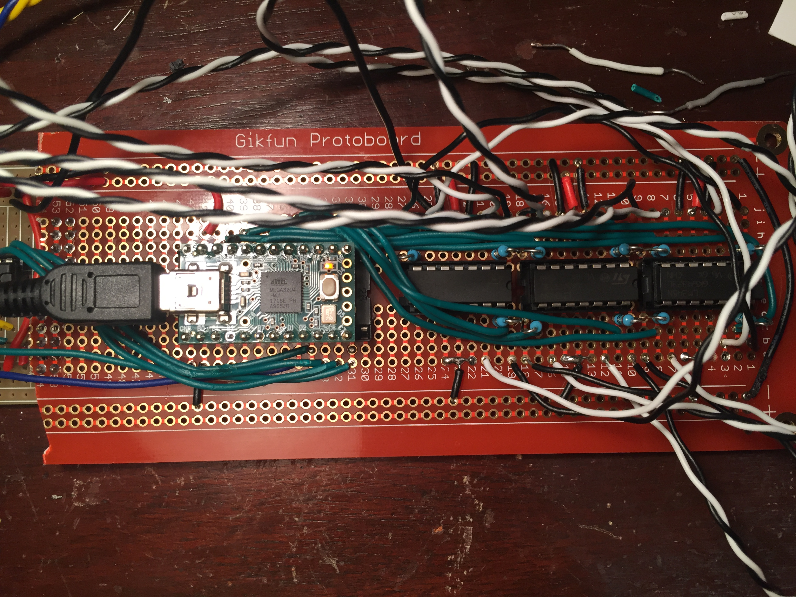
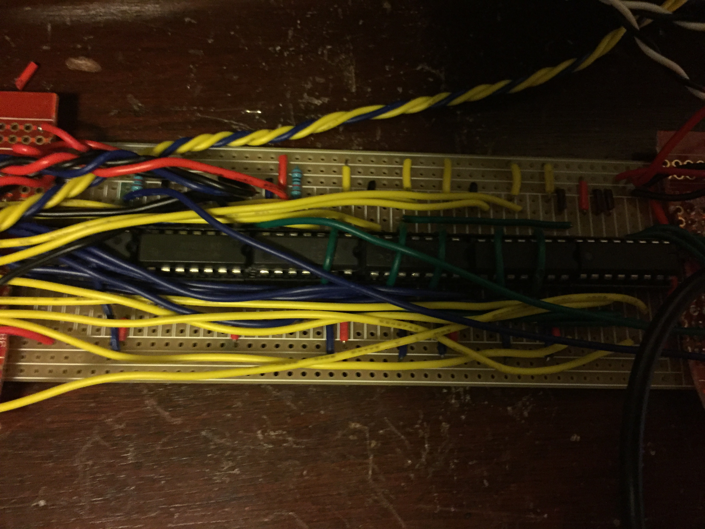

Table of Contents:
- Introduction and Overview
- Enclosure Design
- Circuitry
- Ultra-wideband Position detection
- Code
- The Team
Introduction and Overview
Electronic musicians give notoriously boring performances, offering audiences only the top of their heads while they twist knobs and occasionally shout incoherently into a microphone. Common complaints of live electronic performances include variants on “it was more of a light show than a musical performance.” The void of visual content in contemporary electronic music performance has opened because the tasks an electronic musician must perform (like cueing tracks and playing melodies on a midi controller) are difficult to make visible to a large audience. Enter Orpheus. Orpheus is a table top laser harp-styled MIDI controller that provides one and a half octaves of notes and continuous gestural control of the resulting sound. Sensors positioned at either end of Orpheus triangulate the position of the hands over the instrument, giving the user continuous control in the form of MIDI data. The resultant customizable CC mappings allow musicians to access parameters commonly manipulated in electronic music. Most laser harps are projected from the floor with a single laser that is fanned into many separate beams by a stepper motor, and must be played while standing away from the rest of an artist's rig. Orpheus’s table top design allows it to integrate with other MIDI and DJ controllers, while fitting with the laser-light-show aesthetic and filling the void of visual performance.
Our aim is to design a controller which should be adaptable to a variety of musical styles, but is mostly oriented towards electronic musicians and DJs. The bombastic laser array fits in well with already existing light shows of live electronic performances, and its small form and MIDI control means Orpheus should integrate easily with the production and performance workflows of electronic musicians. Because the MIDI control is quite flexible, we hope that other musicians might want to find space for Orpheus in their productions and performances.
Orpheus differs from other previously existing laser harps in that the laser array is designed to be “infinite scrolling.” Other designs frequently feature sensors directly opposite the laser beam. In these designs, the intersection of the musician’s hand is detected by identifying the lack of light entering the opposing sensor. In particular, these designs require that an array of sensors be placed above the array of lasers, which increases the size of the overall product. We chose an infinite scrolling design--one in which the laser beams themselves are allowed to extend indefinitely. The intersection of the musician’s hand with a beam is identified instead by the reflection of the laser off the palm back onto the device itself. This considerably reduces the size of the device by removing the frame of opposing sensors.
However, the issue of detection becomes more difficult in such an infinite scrolling design. Previous iterations of Orpheus involved detection of the reflection off the palm through infrared sensors. These are relatively inexpensive sensors with a narrow detection width, which made them good candidates as the reflection off the palm from neighboring laser beams would have a low impact on an infrared sensor. However, the use of fog effects is critical to allowing the full visual impact of the lasers, since the beams are impossible to see without it. This fog introduced high amounts of noise into the detection methods, in the end proving that the utility of infrared sensors for laser beam detection is limited by the performance context.
This iteration of Orpheus forgoes the infrared detection methods in favor of an array of light-collecting diodes, or photodiodes. These diodes operate in much the same manner as the common light-emitting diode, but instead measure the incoming luminescence. Each laser housing contains, beyond the lasers, a light-collecting diode which is recessed into the casing. The reflection of a laser beam off the palm is detected by the light-collecting diode next to the laser, and recessing the diodes helps to minimize reflection from neighboring beams or the ambient light of the environment. Tuning the detection of these devices has proven challenging. We had to rely on operational amplifier circuits to best tune the outcoming signal, attenuating noise and identifying the intersection of the associated beam.
Enclosure Design
We believe that good design hides complexity within order. Orpheus's enclosure, on the macro level, is a simple rectangular prism. Then you look at the edges and see the complexity in the box joints. Acrylic is strong, stiff, easily machined, and aesthetically beautiful.
There is something about this design that we find incredibly appealing. It is also practical and functional, adding significant structural integrity by introducing more surface area for the epoxy to adhere to, and reducing the stress on the epoxy joints by transfering pressure into the acrylic.
First, the designs were drawn isometrically on graph paper. The box joints were both for aesthetic and strength. Note the drawings of a different photodiode that we did not end up using - we tried every photodiode we could get our hands on. Our constraints for the laser mount were 1) Soundly attatch the lasers and sensors, 2) ensure a right angle between the laser and the top surface to minimize the angle of reflectance, 3) recess photodiodes to minimize light bleed, 4) recess MTA connector to reduce stress on the photodiode leads.

Then, they were created in CAD. This is an extremely tedious process, and it forces you to make all design decisions ahead of time. For example, all the parts had to be ordered before we could begin construction to ensure we had the correct size and spacing.
Finally, after the circuitry was to a point at which we were confident with dimensions, we started construction. We are greatful to the kind folks at the Segal/Ford Design Center at Northwestern for letting us use the laser cutter to cut the acrylic. Hardwood supports were installed at the ends to screw on the bottom, into which we cut recesses for the screw heads. This kind of work (rastering) is terribly difficult, tedious, and requires much trial and error.

Circuitry
The laser array is the heart and soul of Orpheus. It consists of 16 independently controlled lasers in 11 laser housings, and for each of these an associated MIDI trigger event that occurs when the musician intersects the beam of the laser with the hand. Each laser housing holds at least one red laser, and five selected housings also hold an additional blue laser whose purpose is to provide a frame of reference so that the musician can easily identify the position of a particular laser in reference to the others. Underpinning the array is a complex circuit composed of logical gates, transistors, multiplexers, and switches. Each of these devices serves to control which laser is currently active and to allow the musician to specify whether the referential blue lasers should be active.
Orpheus uses a Teensy 2.0 microcontroller to control all the inputs and outputs, and send MIDI messages to a computer for processing.

The Teensy is the big chip on the left.
Importantly, the laser circuitry operates best at five volts. We had originally selected the Teensy 3.5 as the central microcontroller for Orpheus, but later discovered that the overall laser intensity was not bright enough, as this controller operates at 3.3 volts. Instead, we chose an earlier version of the Teensy microcontroller, the 2.0, as the central controller for the laser array. This microcontroller operates at 5 volts, at the cost of lower overall computational power. For this portion of the project, high computational power was of less importance, and so the increased voltage and decreased size of the Teensy 2.0 proved to be more ideal for laser operation and detection.
Also visible here are the opamps. Photodiodes detect the light reflected from the lasers off the hand. However, the photodiode's signal is
exclusively in the current domain. The opamp circuits convert this to the voltage domain and boost the signal so that
it is readable by the Teensy. This was the most difficult part of the laser circuit, and required many hours to optimise.
There is still a ways to go, and the range can be improved. We have purchased other opamps and are iterating to improve.
Orpheus is powered and interfaced through a custom power supply that provieds 2 amps to power the lasers and all the chips with sufficient
overhead for expansion.
The heavy lifting is done by a voltage regulator. Voltage regulators get hot, so we designed vents to allow airflow to cool it.
The large hole is a place holder for an ethernet port so we can expand Orpheus and give it more traditional controls to allow the user to
manipulate its mappings (i.e. major->minor, transposition, etc.)
The switch gives manual control over whether the red or blue lasers are activated.
The logic circuit is what allows us to have independent control over all 16 lasers.

A blue override also comes out of the Teensy so that it can do fancy laser light shows and visualisers.
An OR gate recieves the output of the switch and override, and outputs a control voltage, Blue.
Blue is ran through a NOT gate then is ANDed with the red output of the switch to give the control voltage for the red lasers, Red.
The Teensy outputs a 4 bit binary count. A demultiplexer, or demux, converts 3 least significant bits to decimal, turning on one of
eight pins at a time.
These eight pins are ANDed with Red and Blue so that laser only turns on if its respective color control voltage is high and the mux
is returning its number.
If you are paying attention, you may notice that the 3 bit output of the mux can only count to 8. How do we control all 11 red lasers?
We used a clever trick to add another bit without having to add another IC chip. The anodes (negative side) of the lasers are actually
connected to the most significant bit (MSB).The first 8 lasers have the direct output from the MSB. MSB is also fed into a NOT gate.
The output of this NOT is connected to the anodes of the final three lasers. Then, the last 3 recieve a similar signal to the
first 3 lasers.
Why does this work? The lasers are basically glorified Light Emitting Diodes (LEDs). As diodes, current can only flow in one direction.
When the anode is hooked up to positive, the laser cannot turn on. Lets take an example. At count 0000, the Mux/AND gates output
logical high to the cathode of the first laser, which turns on because its anode is connected to the MSB, which is 0.
The 9th laser recieves the same high to its cathode, but its anode is recieveing a 1 from the NOTed MSB, so it does not turn on.
The opposite is true when MSB is high.
Finally, the output from the logic is fed to an array of NPN transistors.

These transistors prevent the logic circuit from being damaged by the lasers, which require a lot of current (>=30mAh each).
Ultra-wideband Position Detection
Orpheus was first conceived as an instrument in two parts. The array of lasers allows the musician 11 distinct MIDI trigger events, which are most obviously used to trigger notes, though more creative or experimental triggers could also be used. For example, in the video demo, the second to last laser switched the MIDI mapping from diatonic (for melodies) to chromatic (for drums). However, any musician knows that continuous modulation of sound is an integral part of creating a musically interesting result. In more traditional contexts, this modulation might be the vibrato imparted by a violinist’s fingers or the fine adjustment in a trombonist’s embouchure. In the case of Orpheus, a natural map for this continuous modulation is the height of the musician’s hand above the device. We might imagine a performance where the musician intersects a laser to produce a deep bass note, and then moves their hand down the beam of the laser to continuously shift the pitch further and further down (from here, perhaps the sound ceases when the musician removes their hand from the current laser to intersect another with the same continuous pitch modulation, repeating this process to create a groovy bassline). Perhaps instead, the height of the hand does not correspond to a shift in pitch but rather the cutoff of a filter or the width and overall mix of a delay. The nature of Orpheus as a MIDI controller means that this continuous modulation should be decoupled from the specifically triggered event that results from intersecting a particular laser.
Some methods of laser detection inherently allowed for detection of the height of the hand through the intensity of the sensor output. Infrared detection and light-collecting diode detection, for example, offered this capability, but the aforementioned desire to use fog effects to better illuminate the lasers introduced high amounts of noise. As a result, using these sensors to accurately detect the height or position of the hand above the device was unsuccessful. Instead, we had to turn to other methods.
Our first ideas involved two bluetooth transceivers positioned at the two ends of the device, and a third placed on the hand of the performer. Theoretically, by measuring the intensity of signals passed between the transceivers we could get an estimation of the distance between the hand and the two bluetooth modules placed inside the casing. Using this data, the position of the hand can be determined through triangulation. This would give an approximate location of the hand in the space above the harp, thus providing the necessary data to implement the continuous control based on height.
However, bluetooth technology does not provide adequate accuracy in a musical context. For Orpheus, we needed high degrees of accuracy so as to allow for expressive yet nuanced continuous control. As a result, we had to look into other detection options.
In doing so, we stumbled upon a new and rather experimental technology known as “ultra-wideband.” In essence, ultra-wideband (UWB) operates in the same manner as Bluetooth, but encodes precise timing information in the pulses of the signal. As the name suggests, UWB operates in a wide bandwidth which is not utilized by other technologies. UWB is therefore more resistant to impedance effects such as those introduced by fog or any number of props which may be used in a musical performance.
From our research, it seems as though little exploration has been done regarding the use of UWB in the context of very short-range distance detection, let alone a musical context (which requires a high degree of accuracy and speed in order to be successful). UWB has been largely developed for use in indoor positioning systems, and as a result is more often used at longer distances than would be required using Orpheus. We are hoping that our work here with UWB in a musical context can provide a fresh perspective on the accuracy and reliability of this technology at especially close range. We fully intend to document our findings and present them to the community interested in using this technology. In particular, if the technology proves to be accurate enough for use in a musical context, then this might open the door to whole new classes of “theremin-like” interfaces whose operation relies on the position of the hand relative to an array of sensors. This technology could then be combined with already existing sensor technologies, such as accelerometers or gestural sensors, to create a more fully equipped “language” of musical expression integrating the absolute position of the hand with gestures performed by the musician.
UWB is a new technology, pioneered by the manufacturer DecaWave. This company produces a small variety of integrated circuits that operate in the ultra-wideband range. Their primary device, the DW1000, is designed for more industrial settings than the project here, and requires more professional circuit building techniques than we had available. Luckily, DecaWave produces a related module, the DWM1000, which is more user friendly and exposes the pins of the DW1000 module while simultaneously integrating an antenna with the device. We chose the DWM1000 module as the candidate for our continuous control because it allowed for easier soldering to adapter PCBs.
Even still, soldering these modules proved to be a challenge. The DWM1000 features castellated solder pins, which are small and positioned in close proximity to one another. We experimented in using solder paste to attach the modules to their adapter PCBs, but discovered that without taking necessary precautions---like clamping the boards to the PCBs---using solder paste has a high likelihood of flooding beneath the chips and causing short circuits. Using appropriate clampings seems to mitigate this issue, but we also experimented with a traditional soldering operation. This method, given an appropriately fine-tipped soldering iron and steady hand, is probably more reliable as the solder cannot flow as freely as solder paste.
Unfortunately, the operation of these modules is highly convoluted, because of the experimental nature of the technology. The modules have an associated library for use with the Arduino IDE which was ideal for this project, given our previous experience with Arduino. We had originally selected the Teensy 3.5 as the central microcontroller for Orpheus, which offered high speeds and 3.3 volt operation. This was ideal for the DecaWave modules, as they can only operate at 3.3 volts, and higher computation speeds would allow for more frequent distance calculations. However, we discovered quickly that the Arduino library for the DW1000 modules was not compatible with the pin configuration of the Teensy 3.5, and no Arduino code would compile successfully for the Teensy.
In order to debug these modules, we had to turn to alternative microcontrollers. We started with the Teensy 2.0 selected for control of the lasers, in hopes that all control within the device itself could be centralized. However, the Teensy 2.0 operates at 5 volts and so some basic level shifting to 3.3 volts had to be performed. This was achieved through some simple resistor circuits, and after affirming that signals sent to the UWB module were at the correct 3.3 volts, we successfully compiled test code included in the Arduino library for the modules and uploaded to the Teensy 2.0.
We turned then to debugging the sending DWM1000 to be placed on the hand. This module was to be controlled with an Adafruit Trinket Pro operating at 3.3 volts, an attractive option due to its small size and correct operating voltage. This module would transmit a message, which would then be received by the two modules in the harp itself. The UWB technology, through encoding precise timing information, would then allow us to compute an accurate distance between the hand and each receiver module. We discovered at this point, however, that the Trinket Pro has no onboard serial chip, which made it nearly impossible to retrieve device information and determine if the module was operating as expected. Our attempts to send messages using the Trinket Pro could only be determined as successful by monitoring the output of the receiver modules. But these attempts produced no corresponding output from the receiver end, leading us to believe that the sending module was limited in some way. In particular, research on the Arduino library GitHub page suggested that the Trinket Pro could not offer the required current to the module to successfully send messages, or that the Trinket Pro did not offer the required computation speed for the modules.
We chose then to try sending messages from the DWM1000 using an Arduino Uno. Importantly, the Arduino Uno can only offer the required current to the modules if it operates at 5 volts, as the onboard 3.3 volt regulator can only supply a maximum of 50 mA, which is too low for the DWM1000. We attempted to level shift all signals to the chip using resistors, but in doing so discovered that the process of level shifting reduced the power output of the Arduino Uno to a meager 1.5 V, not nearly high enough to have successful module operation, and we again found considerable trouble in getting the sending module to transmit its messages.
Unfortunately, the overall scope of Orpheus and the timing constraints of the project meant that we were only able to attempt to use UWB as a form of continuous control. The DecaWave modules are supposed to be highly accurate, though finicky, and the microcontroller requirements proved to be a serious detriment to this portion of the project. We need 5 volts in order to successfully operate the laser array, but 3.3 volts to control the UWB modules, and moreover the microcontroller needs to supply enough current to allow the modules to freely make message transactions.
We have already purchased three more Adafruit Feather M0 microcontrollers, which operate at 3.3 volts, have a high clock frequency, and can provide 500 mA of current, for future iterations of the continuous control. Moreover, they have onboard serial output via USB which is critical for debugging efforts, and are small enough so as to allow them to be wearable on the hand. We chose versions of the Adafruit controllers which come preinstalled with additional radio frequency modules. If we find that the UWB technology is unsuitable for this project then these RF modules may offer another way of range computation. If instead the UWB technology is only partially suitable for use in Orpheus, then using the UWB modules together with the radio modules may offer increased accuracy and reliability when trying to find the position of the hand above the harp.
Overall, the ultra-wideband technology pioneered by DecaWave has proven difficult to work with due to its experimental nature. However, it offers unparalleled accuracy and an ability to operate even in highly noisy (in terms of sensor output) environments, as might be found in the context of a musical performance. While it is unfortunate that we could not implement this technology in the current iteration of Orpheus, we are already planning improvements in future iterations to better integrate the modules into the overall circuitry of the project. We remain optimistic that ultra-wideband technology can offer our project highly accurate calculations in position, and can then form the basis for an expressive language for the continuous control we desire in Orpheus.
Code
Orpheus includes minimal firmware downloaded onto the Teensy, and does not require any specific software or drivers to produce music in your music production machine.
While running the output through Max MSP would give the user more control, we
selected a software and driverless approach to increase portability and ease of use.
The Team
Ben Krege
JohnKrege2018@u.northwestern.edu
317-775-0018
Bailey Bjornstad
BaileyBjornstad@gmail.com
760-419-9148
Instructor:
Bryan Pardo
Pardo@northwestern.edu
847-491-7184
This project was undertaken in partial fulfillment of the requirements for EECS 397 at Northwestern University.